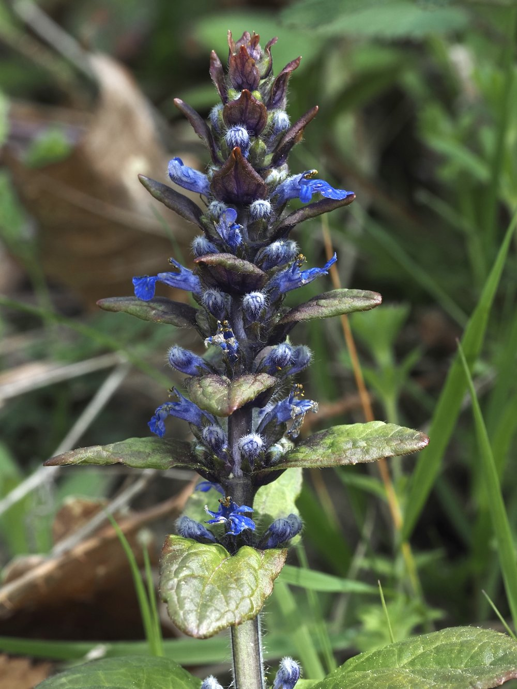

Kriechender Günsel


Die blaue Kerze des Waldrands
Im April reckt der Kriechende Günsel seine dichten Blütenähren in die Höhe – ein ungewöhnlicher Anblick für eine so niedrige Pflanze. Die blauen Lippenblüten sind stapelweise übereinander angeordnet wie eine Kerze aus Einzelblüten. Für Hummeln, die nach dem Winter auf Nektarsuche gehen, ist der Günsel eine der verlässlichsten frühen Quellen.
Kriechend, aber gezielt
Der Name ist Programm: Per Ausläufern breitet sich der Günsel flach über den Boden aus. An jedem Knoten können neue Rosetten entstehen. In Gärten wird er als Bodendecker geschätzt, im Wald hält er Bodenerosion in Grenzen. Die Gartenform mit bronzefarbenen oder silbrig gefleckten Blättern ist von der Wildform gezüchtet – aber beide locken dieselben Bestäuber an. 'Reptans' = kriechend:Der Artname beschreibt die Wuchsstrategie. Die Ausläufer können bis zu einem halben Meter lang werden und verankern sich überall, wo sie Boden berühren.